Scientific Classification
| Kingdom | Animalia | Animal | Animals |
|---|---|---|---|
| Phylum | Chordata | Chorda | Corded |
| Class | Chondrichthyes | χόνδρος + ἰχθῡ́ς | Cartilaginous Fishes |
| Subclass | Elasmobranchii | ἔλᾰσμᾰ + βρᾰ́γχῐον | Plate-Gilled |
| Infraclass | Euselachii | ἐΰς + σέλᾰχος | True Sharks |
| Division | Selachii | σέλᾰχος | Sharks |
Taxonomic note: The term Selachii is used here for the true sharks, a major lineage of elasmobranch cartilaginous fishes. It should not be treated as synonymous with every animal that Kaimerans traditionally call a shark. Several groups regularly receive the common name "shark" despite being outside Selachii. Hybodonts, for example, are not technically sharks under strict phylogenetic definitions, although the Assembly commonly includes them under the informal category.
01 · INTRODUCTION
Overview
The Selachii are one of the most diverse and ecologically important groups of cartilaginous fishes in the oceans of Kaimere. They occupy nearly every marine environment, from shallow coral reefs and extensive seagrass meadows to rivers, lakes, coastal wetlands, deep oceanic waters, and the abyssal seafloor. Their diversity is considerably greater than that of Earth's modern shark fauna, owing both to the enormous productivity of Kaimere's oceans and to the repeated introduction of shark lineages through the Portal.
Sharks are among the most feared animals on Kaimere, largely because of their reputation as indiscriminate killers. In reality, the overwhelming majority of species pose little danger to humans. Even species capable of killing a Kaimeran generally do so only under particular circumstances, such as when an animal is wounded, starving, threatened, or investigating an unfamiliar object. Because sharks lack grasping hands or other appendages with which to examine objects, some species investigate unfamiliar animals by biting them. In the case of a large shark, an exploratory bite can itself be fatal.
Kaimeran sharks are consequently extremely variable in form and ecology. Some are tiny schooling predators only a few inches long, while others are enormous apex predators exceeding twenty meters in length. Some are specialized filter feeders, consuming plankton and small fish by the ton, while others hunt marine mammals, fish, reptiles, other sharks, or benthic invertebrates. Several lineages have independently entered freshwater, and one unusual hybodont has evolved the ability to walk between waterways.
The modern shark fauna of the Known World is composed of both ancient Kaimeran lineages and relatively recent introductions from Earth. Some groups have been present for more than one hundred million years and evolved into forms found nowhere on Earth. Others arrived during relatively recent harvests and remain recognizable as members of familiar Earth lineages. Consequently, Kaimere's sharks provide an unusual mixture of evolutionary continuity and repeated replacement.
Although the term "shark" is commonly used by Kaimerans for a wide variety of streamlined cartilaginous fishes, it is not always used in a strictly phylogenetic sense. Hybodonts, for example, are generally called sharks despite falling outside the true shark lineage, while sawfish-like animals such as the carpenter sharks were historically classified as sharks before their closer relationship to rays became apparent. Holocephalians inhabiting the deep ocean are likewise sometimes called sharks despite belonging to an entirely different branch of Chondrichthyes.
Among the most distinctive ancient Kaimerean shark lineages are the frogmouth sharks, allolamiaforms, and eagle sharks. Frogmouths are particularly diverse and include coastal, deep-water, and freshwater forms. Their characteristic broad jaws allow them to employ powerful suction feeding, after which they may either swallow prey whole or use lateral thrashing to cut pieces from larger animals. Allolamiaforms include the tiny and highly social sparrow sharks, while eagle sharks are enormous filter feeders that use their broad pectoral fins to generate additional thrust while feeding.
The modern fauna also includes many familiar Earth lineages. Requiem sharks, tiger sharks, hammerheads, great whites, porbeagles, sand tiger sharks, leopard sharks, whale sharks, megamouths, and megalodon all occur in Kaimere, although many have undergone substantial ecological divergence after their introduction.
The productivity of Kaimere's oceans is particularly important to the abundance and size of its sharks. The planet's endemic "purple algae" form a major component of the planktonic food web, supporting immense populations of crustaceans, cephalopods, fish, and other organisms. These resources sustain enormous filter feeders, which in turn provide abundant prey for large predatory sharks. Kaimere therefore supports an unusually large biomass of sharks at nearly every trophic level.
02 · DEEP TIME
Evolutionary History
The ancestry of sharks on Kaimere is considerably older than the first confidently identified true sharks. Shark relatives may have arrived during some of the harvests immediately preceding the First Dynasty, although the fossil evidence is too fragmentary to establish this with confidence.
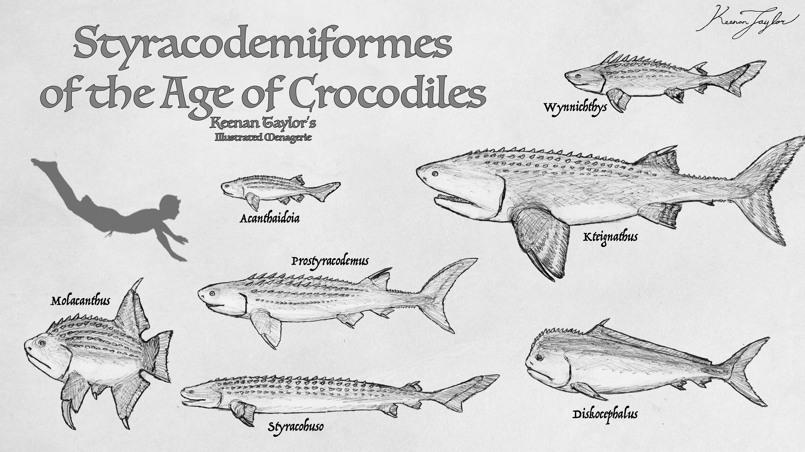
The first secure evidence for true sharks appears during the Age of Crocodiles, approximately 190 million years ago. These early Jurassic introductions established themselves in Kaimere's marine ecosystems but initially had relatively little ecological influence. The oceans were already occupied by numerous successful predators inherited from the Permian Dynasty, including the large endemic acanthodians known as Styracodemiformes.
The Styracodemiformes were particularly important competitors. During the First Mesozoic Dynasty they occupied numerous marine niches, with dozens of species known from Kaimere. Their diversity greatly exceeded that of their modern descendants. The living sawback shark, Styracodemus heptapriocanthus, is the last surviving representative of this ancient radiation in the Known World, although related forms may persist in Kaishel and Kairul.
Hybodonts were introduced alongside the first true sharks. Although not technically sharks in a strict phylogenetic sense, they became important predators in Kaimere's rivers and marine environments. Like the early true sharks, however, they initially remained subordinate components of the marine ecosystem.
The Kaimeran Ice Age
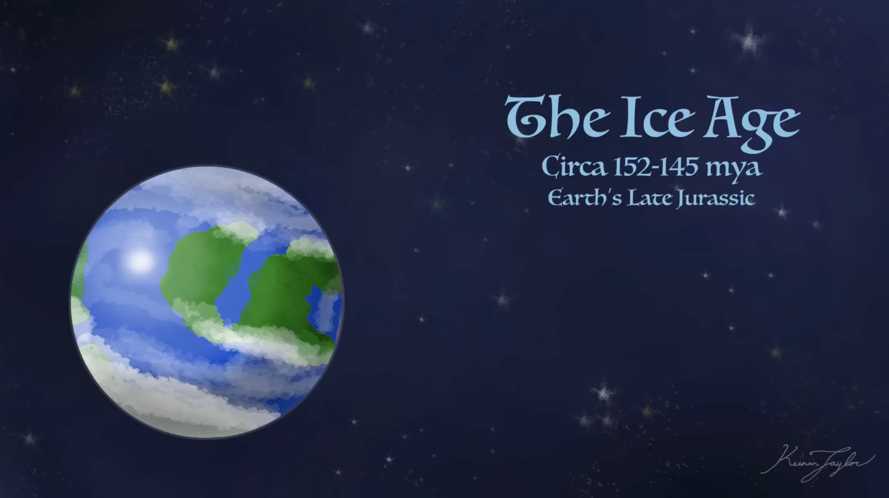
The first major turning point in shark evolution came with the prolonged cooling interval between approximately 152 and 145 million years ago. During these seven million years, Kaimere entered a series of severe ice ages that devastated ecosystems on land and in the oceans.
Most Styracodemiformes disappeared during this period, and the native shark fauna appears to have suffered a similar collapse. Whether these sharks truly became extinct or simply disappeared from the fossil record remains uncertain, since preservation bias is particularly severe for cartilaginous fishes.
When Kaimere's climate stabilized approximately 144 million years ago, however, sharks encountered an ecological landscape dramatically different from the one they had occupied previously. The ecological vacuum created by the ice ages provided an opportunity for surviving shark lineages to expand. They took it.
The First Great Shark Radiation
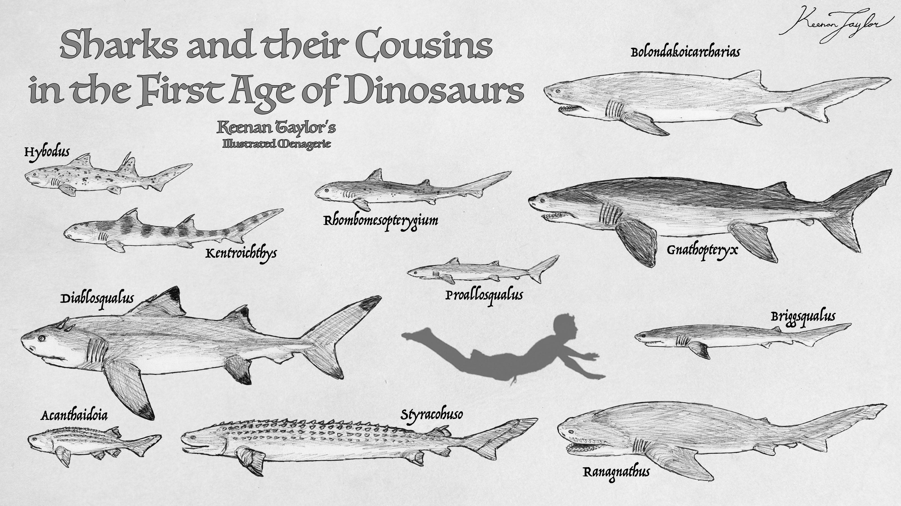
The beginning of the Age of Dinosaurs, approximately 145 — 115 million years ago, marks the first great shark radiation on Kaimere. Shark teeth suddenly became extraordinarily abundant in marine deposits, changing from occasional fossil discoveries into some of the most common marine remains.
Among the most important of these early Kaimeran radiations were the frogmouth sharks. Their exact relationship to modern shark groups remains uncertain, although they are generally considered to occupy a relatively basal position within the squalean branch of sharks.
Frogmouths underwent an adaptive radiation substantially larger than their modern diversity. Many early species did not possess the enormous mouths that characterize some of their modern descendants. Their success appears to have been particularly associated with the stabilization of Kaimere's oceans following the ice ages. Some of the earliest frogmouth fossils occur in nearshore deposits dating to the Age of Crocodiles, suggesting that the lineage originated in Kaimere during the Early Jurassic and survived the subsequent climatic crisis. Their greatest diversification occurred during the Late Jurassic.
The frogmouth radiation was only one component of a much broader event. Numerous endemic shark clades appeared during the Age of Dinosaurs, producing a shark fauna considerably more diverse than that of Earth. Many of these lineages evolved into ecological niches that have no close modern equivalent.
Stability and Repeated Harvests
Following the first great radiation, Kaimere's marine ecosystems became comparatively stable relative to terrestrial ecosystems. The Portal's territory encompassed only a small fraction of the planet's oceans, and most harvests were not specifically concentrated on deep or pelagic marine environments. As a result, terrestrial ecosystems experienced enormous turnovers as new animals repeatedly entered the Known World, while marine communities often retained older evolutionary lineages.
This did not mean that Kaimere's oceans remained unchanged. New shark lineages were introduced during successive harvests, gradually increasing the representation of familiar Earth groups. Rather than replacing the entire native shark fauna, however, these newcomers generally entered ecosystems that already contained long-established Kaimeran sharks. This produced a long period of coexistence between ancient endemic lineages and newly introduced Earth lineages.
The Dynastic Extinction
The next great disruption occurred approximately 15 million years ago during the Dynastic Extinction. The extinction devastated Kaimere's marine ecosystems, producing one of the largest known turnovers in the history of its sharks. Numerous ancient Kaimeran lineages disappeared, while others survived only as isolated remnants. The timing was particularly significant because Earth's shark fauna had itself undergone a major extinction only a few million years earlier. Approximately four million years before the Dynastic Extinction on Kaimere, an unexplained extinction event on Earth had eliminated an estimated seventy percent of shark species and severely reduced many surviving populations.
The harvests following Kaimere's Dynastic Extinction therefore introduced many shark lineages that had recently survived Earth's own crisis. The result was a dramatic change in the composition of Kaimere's shark fauna. The oceans increasingly contained the same broad shark lineages recognizable from Earth, while only a fraction of the ancient Kaimeran radiation survived. Nevertheless, the extinction did not completely erase the native fauna. Several ancient groups survived and continued to evolve alongside the newly introduced sharks.
The Modern Radiation
The modern shark fauna of Kaimere is therefore the product of two evolutionary histories occurring simultaneously. Ancient Kaimeran lineages continued to diversify, while Earth-derived sharks repeatedly entered the planet through later harvests.
The Known World now contains hundreds of shark species, while the total diversity of the world's oceans is estimated to exceed a thousand species. The northern hemisphere and Kairul's interior seaway are particularly important centers of ancient shark diversity, where groups such as the allolamiaforms remain considerably more abundant than they are in the Known World.
One of the most successful modern groups is the dogfish radiation. These sharks occupy a remarkable variety of shallow-water habitats and include species capable of changing coloration to match kelp forests, reefs, estuaries, and clear lagoons. Their versatility has made them among the most abundant sharks in the Known World.
Hammerheads represent a much more recent radiation. They appear to have arrived shortly after the Dynastic Extinction, approximately 14 million years ago, and subsequently underwent an explosive expansion. Their success is particularly pronounced in warm waters, where enormous aggregations may occur.
Other recent introductions include the bonnethead, whose unusual ability to consume seagrass has made it exceptionally successful in the shallow meadows of the Trakaiam Sea. Its specialization on small crustaceans living among seagrass, combined with its ability to reproduce clonally, allowed its population to expand rapidly across the enormous area of the Inland Sea's shallow meadows.
03 · SPECIES ACCOUNTS
Known Diversity
The following accounts document representative sharks recorded in the encyclopedia. Select a species to consult its individual natural history and descriptive account.
Hybodonts of the Crescent
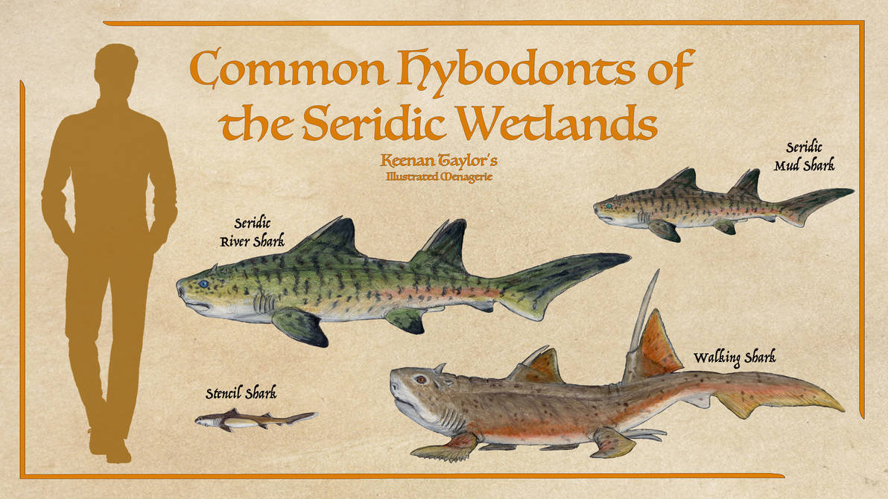
Hybodontiformes
Though hybodonts are not technically sharks under strict phylogenetic definitions, they are often included under the informal term shark by the Assembly. Where they are encountered by Kaimerans, they are also called sharks in most Kaimeran languages, including the common tongue, Amanetran. They were once pelagic, and there may be some in Kairul's interior seaway, but in the known world they are a strictly freshwater clade, though some species can briefly tolerate saltwater as adults when dispersing. The Crescent hybodont, for example, is an extremely abundant predator in the Seridic wetlands, and is the same species as is found in other Crescent rivers not connected to the Seridic swamps and marshes.
Closely related to the river shark is the smaller Seridic mud shark. The body is proportionally broader and flatter than its river-dwelling cousin. Its enlarged pectoral fins function almost like hydrofoils at slow speeds, allowing it to "hover" just above soft sediment while searching for prey.
The stencil shark is a highly specialized hybodont that feeds on the hide and meat of soft-skinned prey such as hippos, buffalo, manatees, sloths, and cetaceans. They were initially believed to be a freshwater species of cookiecutter shark, but it is now known that they aren't even sharks, and instead came upon these adaptations independently for similar reasons.
Perhaps the strangest of the hybodonts is the walking shark, also found in the Seridic wetlands. They can survive out of water for up to five hours as long as their gills are wet, and are capable of walking for several miles between waterways. The pectoral girdle is massively reinforced, and the pectoral fins terminate in muscular lobes supported by enlarged basal cartilages that function almost as elbows.
Read Seridic River Shark article → Read Seridic Mud Shark article → Read Stencil Shark article → Read Walking Shark article →Greater Frogmouth
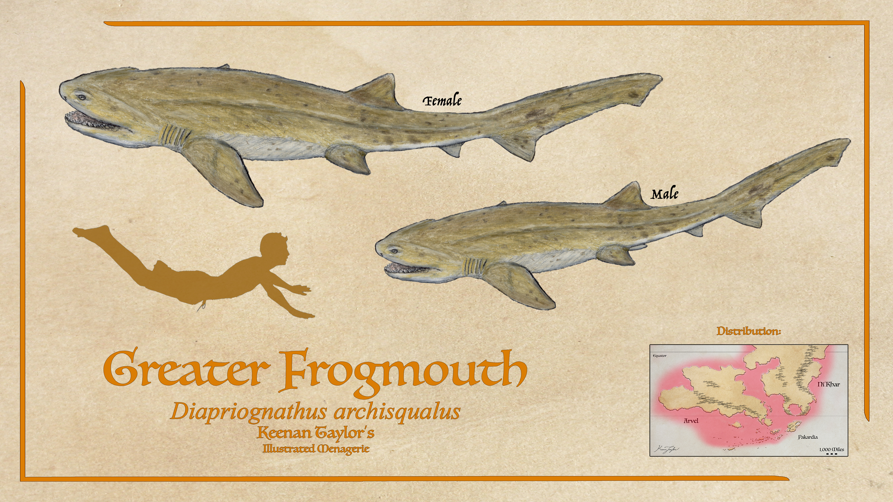
Diapriognathus archisqualus
The greater frogmouth shark the most famous member of the frogmouth sharks in Kaimere. These sharks have deep-sea, coastal, and freshwater species are known. They are so named for their very wide jaws. They hunt by launching from an ambush point, suction-feeding to create a powerful vacuum and either swallow prey whole or establishing a bite, at which point they thrash from side to side and let the arc of their crescent jaws saw off chunks to be swallowed.
Read species article →Flenser Shark
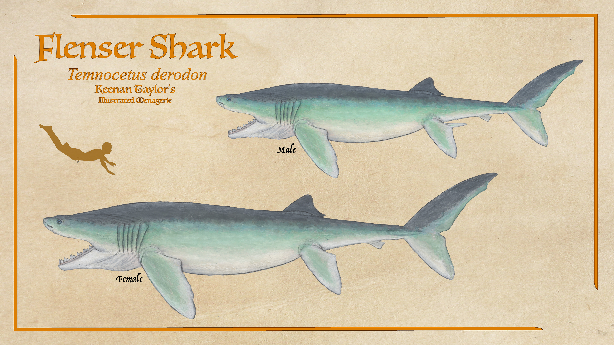
Temnocetus derodon
There are several species in the known world, with the largest being the greater frogmouth, the females of which can reach fifteen feet in length and mass approaching a ton. This is a fraction of the sizes this clade can achieve in the northern hemisphere beyond the known world. The flenser shark, so named for the formidable cutting capacity this shark can achieve with lateral shakes, can reach ten meters in their largest females. They are not fast sharks, stalking prey slowly before ambushing, but they are capable of bringing down prey much larger than themselves. Perhaps because they are able to get by on less prey than the megalodon, which has a regionally endothermic metabolism and needs more than twice as many calories for its size, flenser sharks are much more abundant.
Read species article →Great Trawler Shark
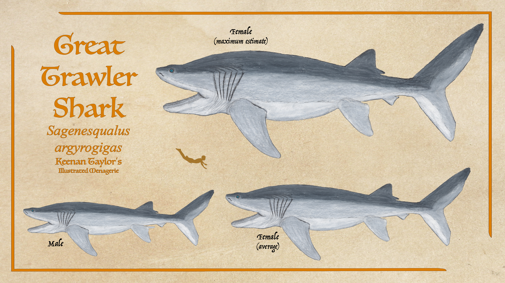
Sagenesqualus argyrogigas
The largest sharks of Kaimere, with their biggest females rivaling the largest megalodon methuselah, is the great trawler shark. These filter feeders are a specialized branch of numerous more basal clades from the same ancestors as frogmouth sharks. Males rarely exceed twelve meters, but the largest female reliably measured by the Assembly was nearly twenty meters, and a specimen estimated to be twenty-three was repeatedly spotted but dived before it could be measured. They indulge on a wide variety of microfauna throughout the year, feeding mostly near the surface and near coastal waters but sometimes trawling the mesopelagic zone during the day, but during the summer, they congregate in the coastal waters of the polar continent. Glaciers melt during the summer, and this creates a runoff of nutrients and algae which concentrates tiny crustaceans and fish in their trillions. This smorgasbord supports a great diversity and biomass of large filter feeders. Size not only affords an ability to consume massive quantities from these plankton-feeder congregations, but also makes travel from winter feeding grounds more efficient.
Read species article →Sparrow Shark
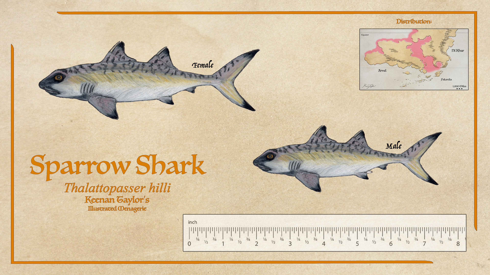
Thalattopasser hilli
Sparrow shark belong to another lineage with a very long history in Kaimere: the allolamiaforms. Like the frogmouths, their exact relationship to modern sharks of Earth is not known, though they are generally thought to be sister to or at the stem of galean sharks, while the frogmouths are thought to hold a similar position amongst the squaleans. The sparrow shark itself is a common sight in the inland sea. These sharks, typically around six inches long, are unusual for such small sharks in that they have a fairly squat thunniform body that favors fast and efficient swimming over agility, making them look more like a large shark in the absence of further context. They are highly social, being often found in large schools in their hundreds and sometimes in the thousands. These predators hunt tiny fish, crustaceans, macroplankton like salps, and even Earth-based magical symbiotes. Sparrow sharks are heavily and unpleasantly armored, but they still are targeted as prey by numerous species of fish, other shark, and marine reptiles and mammals.
Read species article →Rose Shark
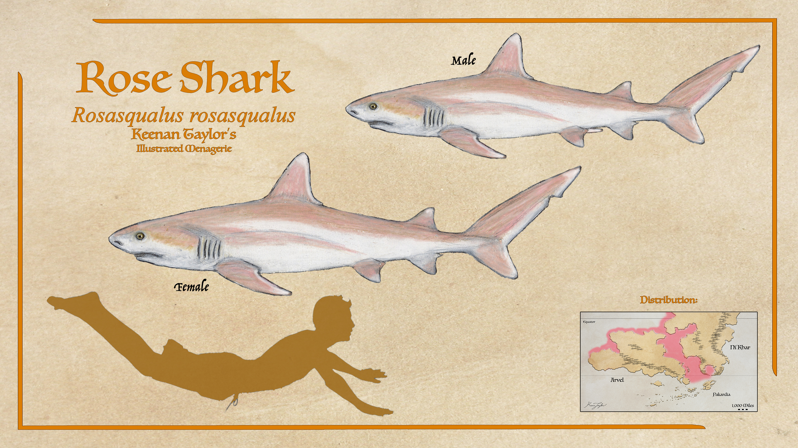
Rosasqualus rosasqualus
Another abundant shark in the known world is the genus Rosasqualus. This requiem shark genus has numerous species throughout the known world ranging from one to four meters, though the type species and name bearer of the group, the rose shark, is in the middle of this size range at two and a half meters. Rose sharks generally live around reefs. Their sister genus Carcharhinus does have numerous species in the known world though the rose sharks tend to dominate.
Read species article →Bronze Shark
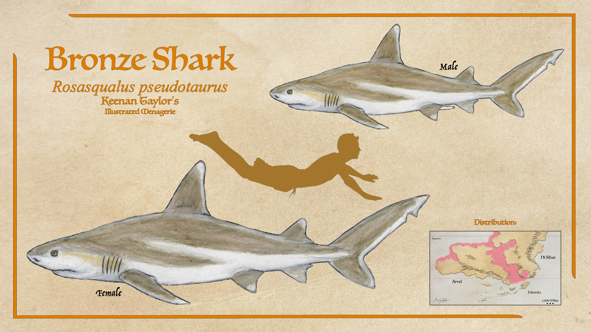
Rosasqualus pseudotaurus
The largest member of the genus Rosasqualus is the bronze shark or Kaimeran bull shark. Like the bull shark of Earth, bronze sharks have a tolerance of freshwater and can swim in quite shallow waters thanks to a fairly flat lower body. Though they don't often seek out humans as prey, they are among the most deadly of Kaimeran sharks because they frequent areas humans are much more common, and are drawn to the sound and scent of humans fishing in shallow water. It is believed the success of the bronze shark is why bull sharks never established a lasting and successful population on Kaimere, despite presumably being part of numerous harvests.
Read species article →Spinner Shark
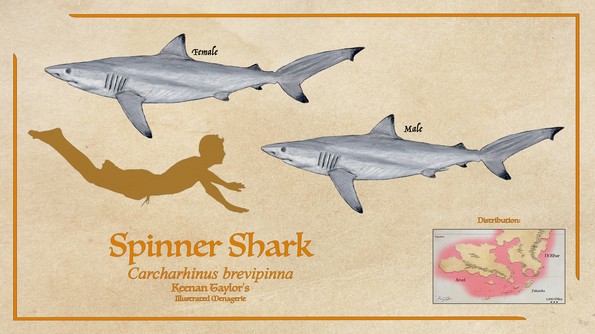
Carcharhinus brevipinna kaimerensis
The inland sea has plenty of strange sharks, though many are quite familiar. Some, like the spinner shark, appear indistinguishable from their counterparts on Earth and likely came from a harvest as recent as that from Northern Africa a quarter of a million years ago. They get their name for their impressive launch from the water while they grab bait fish from massive schools. They live and hunt in large groups, with some congregations numbering in the hundreds. Spinner sharks are often hunted for their meat. Their athleticism also makes them a popular target for sport hunters, and Khalin nobles often seek them out as prey. They are of such tremendous abundance in their range that many Khalin cultures view them as more or less the 'quintessential shark.'
Read species article →Sand Tiger Shark
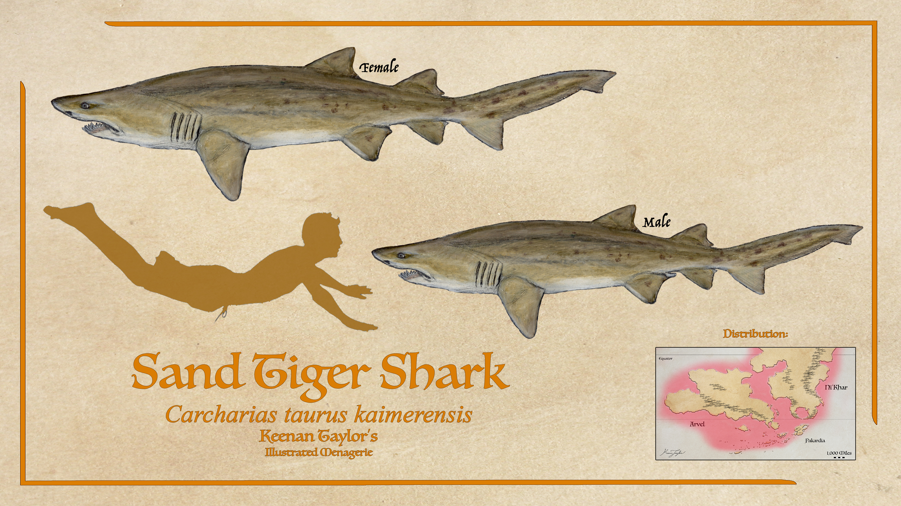
Carcharhinus taurus kaimerensis
Another Pleistocene introduction is the sand tiger shark, an abundant species that migrates between the inland sea and Khalin sea to the south. Though most of their diet is of fish, they have a reputation as a shark specialist, and as much as 40 percent of their diet is of smaller sharks and rays.
Read species article →Leopard Shark
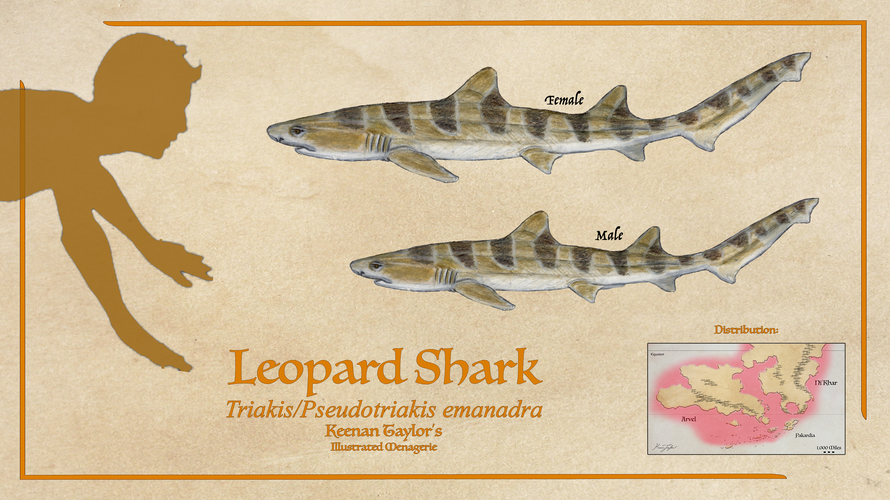
Triakis/Pseudotriakis emanadra
Another abundant shark is the Kaimeran leopard shark or banded hound shark, who can often end up on the menu for the sand tiger shark. This animal is thought to have come from Asia 1.5 million years ago, though it's possible they just converge upon the appearance of Triakis species, and instead have Miocene origins while being from the same general clade. They are an extremely successful shark, found both in the Khalin and Trakaiam seas living in reefs, seagrass meadows, and kelp forests.
Read species article →Storm Shark
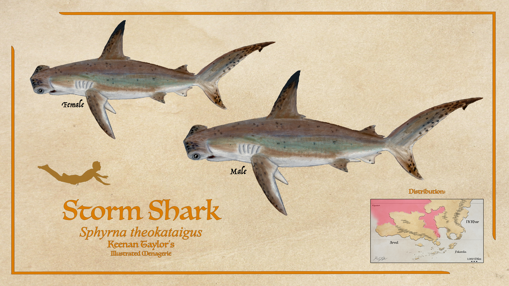
Sphyrna theocataegis
The hammerheads are a fairly recent arrival in Kaimere, seeming to first arrive in the aftermath of the Dynastic Extinction around 14 million years ago. They have been breakout stars in that time, with both species and populations booming throughout the inland sea and beyond. They tend to prefer warm waters and have been reported in tremendous abundance north of the inland sea in the Sea of Storms, with unverified reports of the storm shark congregating in schools estimated at a million strong. According to the Kentarim, storm sharks are the harbingers of the storm goddess Melrahim, and are one of her primary means of bringing storms into the inland sea from the north, thereby providing the islands with fresh rainwater. This, combined with their tremendous size and strange head, makes the storm sharks a highly revered species by the Kentarim and a symbol of power and chaos. They seek out small prey like bony reef fish and crustaceans.
Read species article →Kaimeran Bonnethead
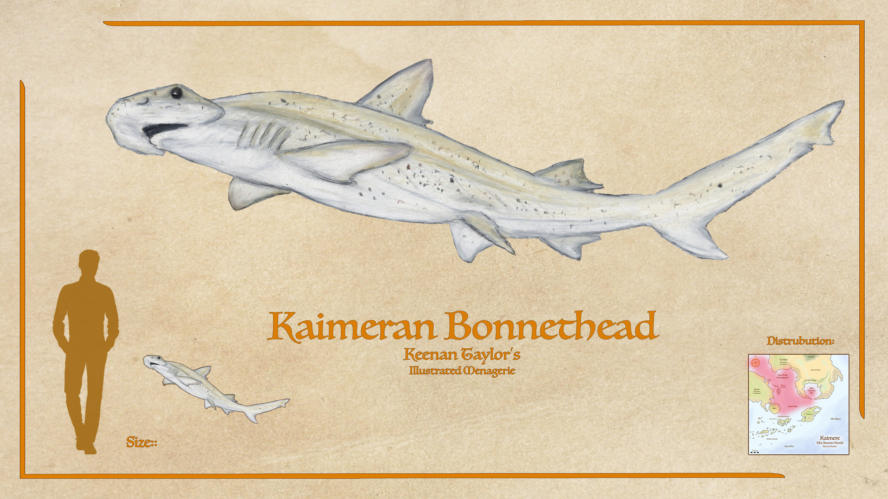
Sphyrna tiburo kaimerensis
The hammerheads are a fairly recent arrival in Kaimere, seeming to first arrive in the aftermath of the Dynastic Extinction around 14 million years ago. They have been breakout stars in that time, with both species and populations booming throughout the inland sea and beyond. They tend to prefer warm waters and have been reported in tremendous abundance north of the inland sea in the Sea of Storms, with unverified reports of the storm shark congregating in schools estimated at a million strong. According to the Kentarim, storm sharks are the harbingers of the storm goddess Melrahim, and are one of her primary means of bringing storms into the inland sea from the north, thereby providing the islands with fresh rainwater. This, combined with their tremendous size and strange head, makes the storm sharks a highly revered species by the Kentarim and a symbol of power and chaos. They seek out small prey like bony reef fish and crustaceans.
Read species article →Khalin Dogfish
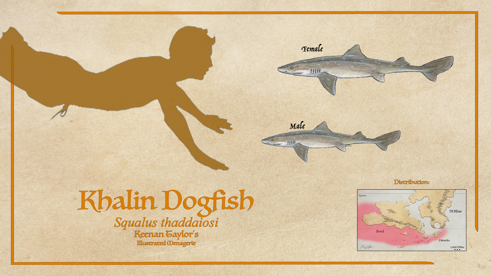
Squalus thaddaiosi
The most diverse and abundant group of sharks in the known world are the dogfish. Most famous of these, or at least best known to the Assembly, is the Khalin dogfish (Squalus thaddaiosi). This shallow water predator is abundant throughout the Khalin Sea and a frequent catch for fishermen on Roostercrest Island. Thanks to melanophores in their skin they are able to change color, helping them blend into kelp forests, busy reefs, murky estuaries, or clear pebbled lagoons that this highly adaptable species calls home.
Read species article →Parrot Shark
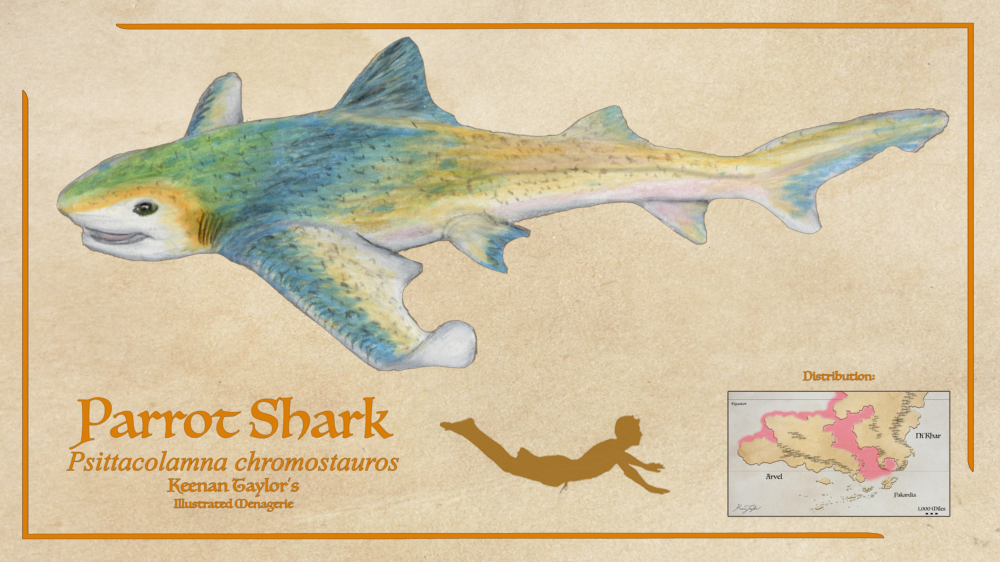
Psittacolamna chromostauros
The parrot shark is a common filter feeder in the inland sea. Unlike most aquilolamnids that swim higher in the water column, parrot sharks spend most of their time on the sea floor. They are common in the reef and the most frequently encountered by Kaimerans.
Read species article →Coastal Lesser Eagle Shark
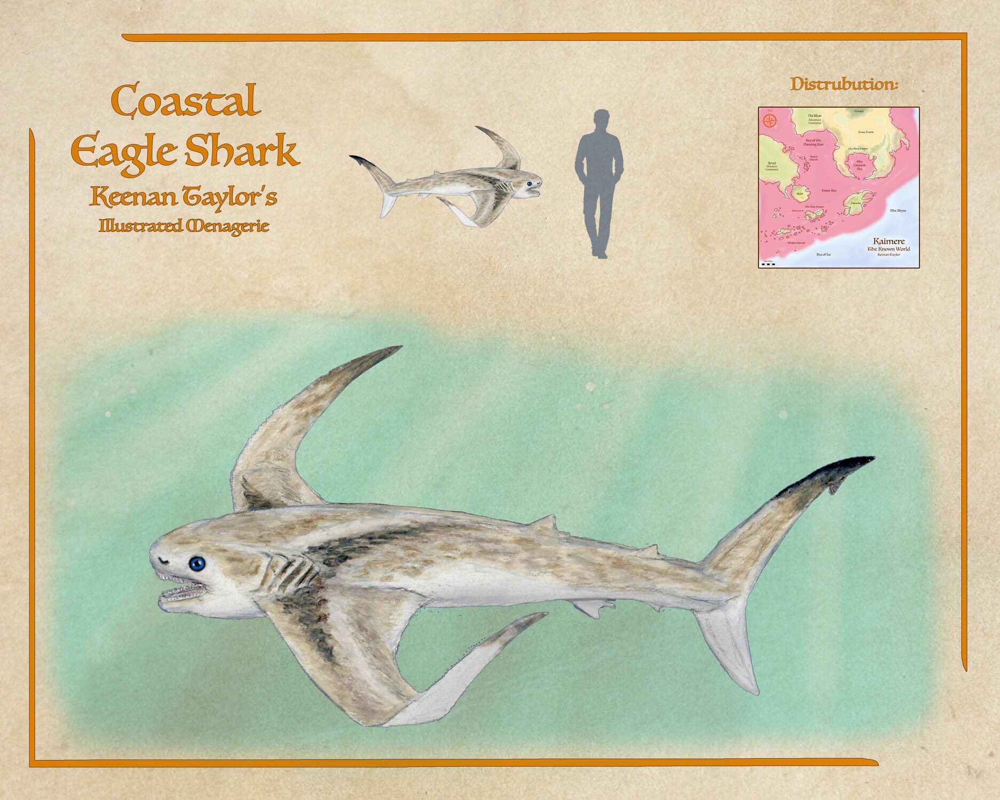
Scientific placement to be confirmed
The most frequently encountered of the eagle sharks is the coastal lesser eagle shark, often just called the eagle shark. They are one of the most common sharks of the inland sea. Their fins are sought out as a delicacy.
Read species article →Oceanic Eagle Shark
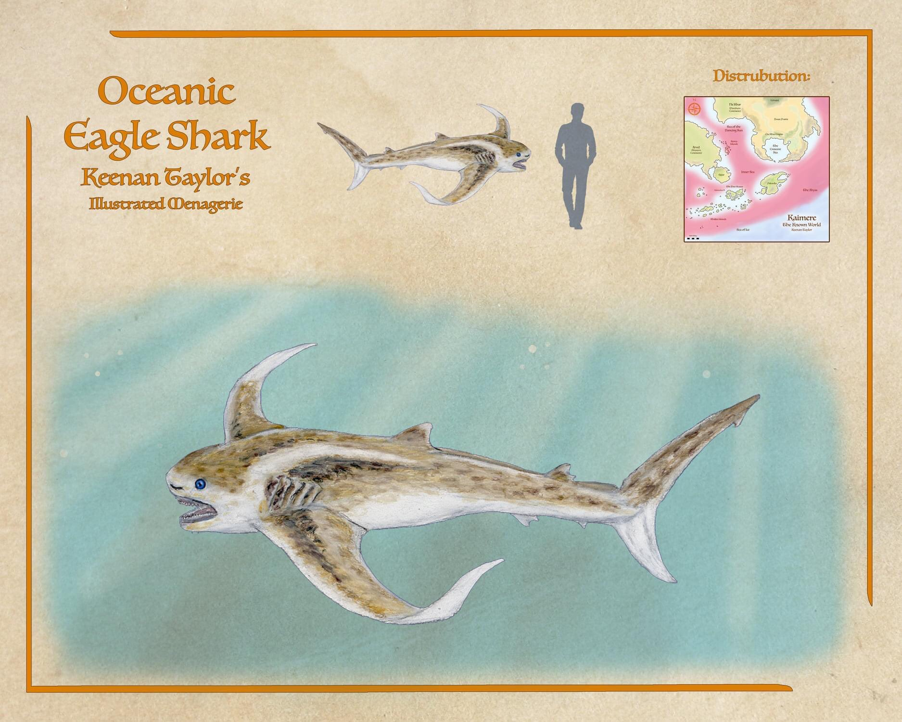
Scientific placement to be confirmed
Although called the oceanic eagle shark, this species (ancestral to the the coastal eagle shark) often travels to the inland sea, but isn't as common there. They also range in the oceans beyond the known world and are found throughout the waters of the entire planet.
Read species article →Greater Eagle Shark
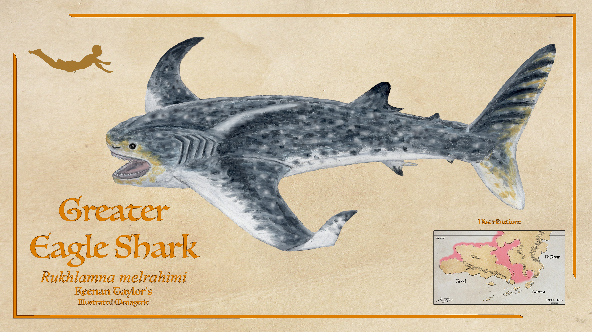
Rukhlamna melrahimi
The largest of this clade is the greater eagle shark which can grow up to 12 - 16 meters. With thick hide, they are considered impossible to hunt. These gentle giants often have an entourage of smaller creatures traveling with them for protection. They are safe to swim with, and welcome divers to tag along.
Read species article →Spotted Megamouth
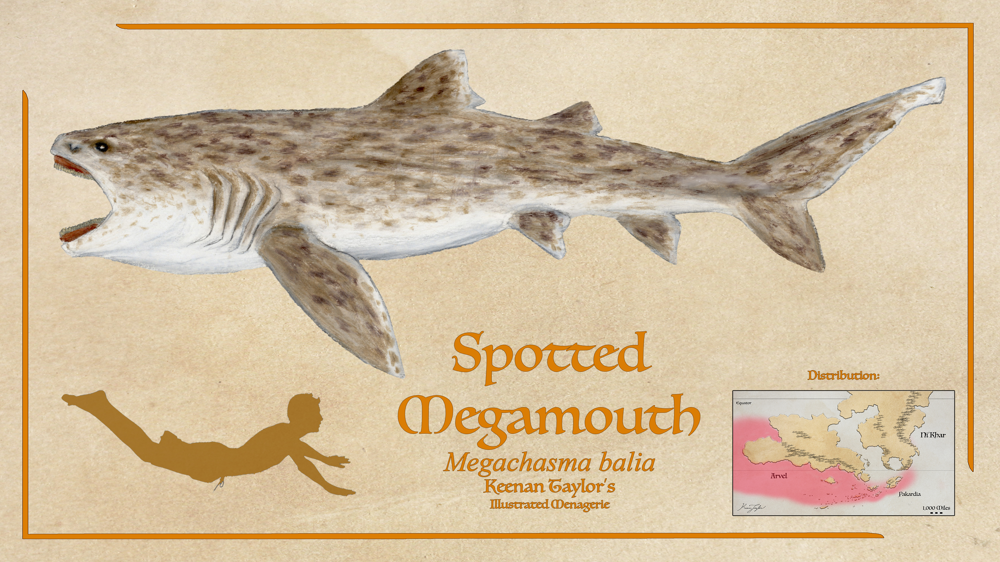
Megachasma balia
The spotted megamouth is a nocturnal filter feeder, cruising a thousand feet or more below the surface while most aquatic predators are hunting, and rising up towards the surface to feed during the dead of night. They tolerate a range of oceanic temperatures, although they prefer cooler waters where the mosasaurs and megalodon that hunt them are less common, and there are more bountiful swarms of plankton to feed on. Whale sharks came through a more recent portal, and are more common in warmer waters while filling a similar niche. The megamouth also competes with whales and the inkilatura for cold-water plankton. The skin of Kaimeran megamouths is not as tough as some sharks like the whale shark, making them fairly vulnerable to attack, although feeding at night combined with their sheer bulk usually affords them sufficient protection. While most adults are between four and seven meters, there are unsubstantiated reports of megamouths exceeding twelve meters in the deeper waters of the Khalin Sea.
Read species article →Whale Shark
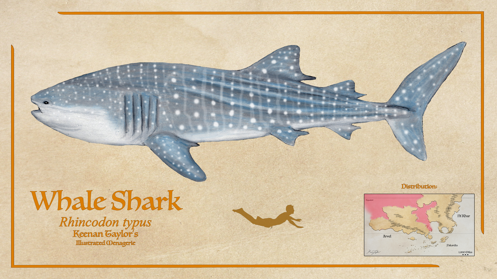
Rhincodon typus
The oceans of Kaimere lack the concentrated nutrients of Earth's polar seas, but are overall more productive in part because of the endemic purple algae at the base of the plankton ecosystem. This context serves warm water filter feeders, like the whale shark, quite well. They do compete with cetaceans and two other species of filter feeding shark, the eagle and megamouth sharks. Although some niche partitioning occurs, with rorquals and megamouths preferring colder waters, and the more agile and athletic eagle sharks being inclined towards faster swarms, there's a great deal of overlap and prey preference between species.
Read species article →Ulaneko
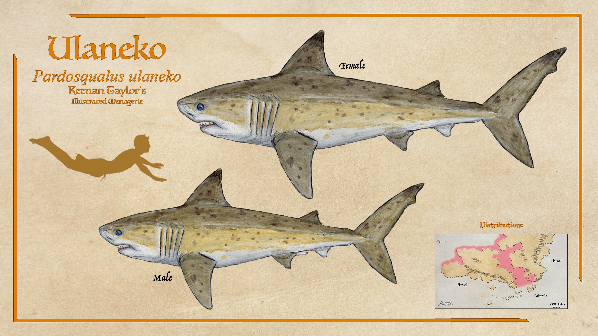
Pardosqualus ulaneko
Up north, the inland sea has its share of deadly sharks. Of course the most notorious is megalodon, but not far behind it in terms of reputation is another megatooth shark: the panther shark, or ulaneko. This otodontid has teeth specialized in piercing and tearing thick hide and blubber of marine mammals. It doesn't perform well against harder armor of turtles, other marine reptiles, large fish or indeed other sharks, but when taking down the marine sloths, desmostylians, sirenians, walruses, and seals abundant in the inland sea, their bite is unmatched. The giant weasel shark, or wolverine shark, has similar specializations and is likely kept rare and concentrated in the shallows as a consequence of panther shark competition. The panther shark has a compact fusiform body built for speed and endurance over agility. The more agile Hemipristis instead sticks to shallower waters, hunting marine mammals closer to shore, while the panther shark instead favors hunting in waters deeper than five meters.
Read species article →Whaler Shark
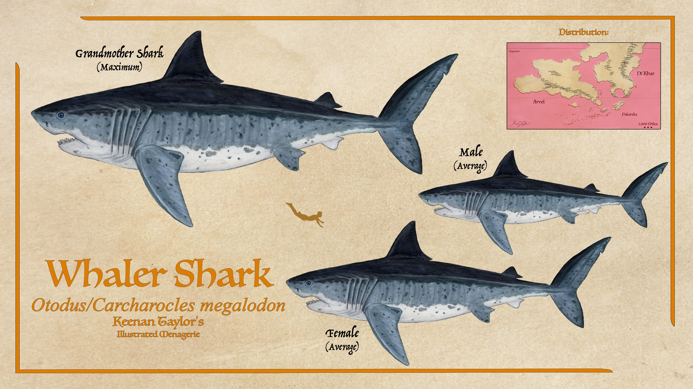
Otodus/Carcharocles megalodon
While all of these sharks are recognized. They all don't hold a candle to the large size of the whaler shark: Otodus megalodon itself. While megalodon has been present since the first harvest following the Dynastic Extinction, it was the population harvested in South America 6 million years ago which seems to have left the strongest impression. They are devastatingly successful hunters, and although not as common as motomazor, occupy a higher trophic level as the great mosasaurs are on their menu. While males rarely exceed fifty feet in length, females can exceed sixty-five feet long and weigh over a hundred tons, making them among the largest animals in Kaimere. They prefer hunting whales, but will hunt marine reptiles and other sharks if their preferred game is not in local abundance.
Read species article →Yakuamun
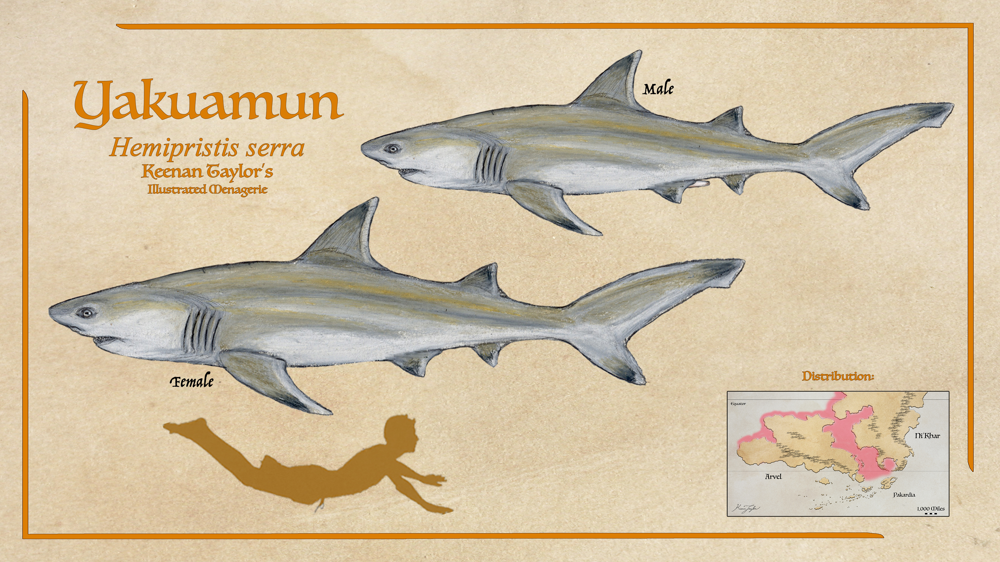
Hemipristis serra kaimerensis
The yakuamun is a common and successful predator of marine mammals throughout the inland sea and warm coastal waters beyond the known world. On Earth, they may have enjoyed majority focus on seagrass grazers like sirenians and marine sloths, but once they got to Kaimere, a far greater abundance of this prey came with a lot more competition. Not only did they still have to compete with young megalodon for this high calorie resource, there was also a native shark that took a liking to this food source: the ulaneko. With greater speed and endurance, the ulaneko dominates, though it fares poorly in shallower waters, so the yakuamun is more abundant and successful in waters less than 5 meters deep. There's plenty of seagrass grazers to be found in this zone, so is of little concern to the shark. As some sea cows tend to be pushed into deeper seagrass meadows due to the abundance of desmostylians and sloths that need to be near shore to rest, H. Serra doesn't always hunt sirenians as exclusively as they might prefer, though sea cows are easier and preferred prey whenever possible. They are often considered safe to swim around, though mistaken attacks do occur now and then.
Read species article →Kaimeran Porbeagle
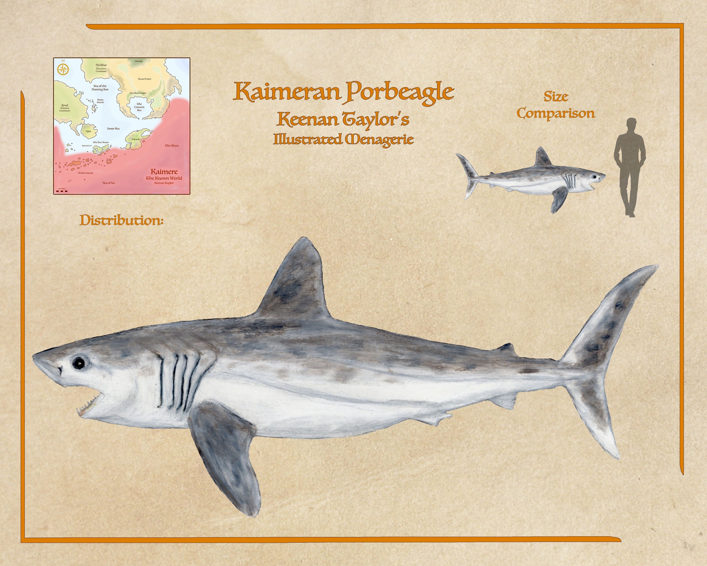
Lamna sp.
Coming come from Europe around 700 — 600 million years ago is the Kaimeran porbeagle. A small predatory shark they maintain a higher temperature than the surrounding water, making them able to tolerate cooler waters than many tropical sharks, and are one of the few active hunting sharks in the colder waters beyond the southern islands. They do not hunt humans, in fact their name in several Khalin languages translates to 'playful shark' since they steal oars and raid traps. The few times they have injured Kaimerans it has been accidental.
Read species article →Khalin White Shark
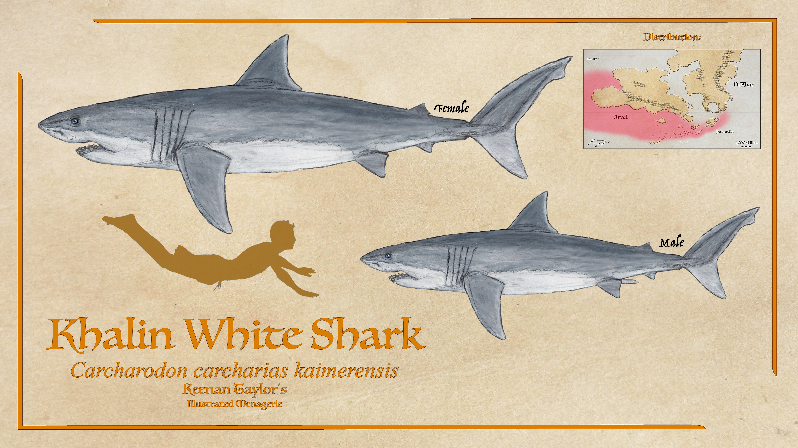
Carcharodon carcharis kaimerensis
A more familiar terror of the seas that also came with the porbeagle is the Khalin great white. It is theorized this shark avoids the inland sea due to the established panther shark, though it may simply prefer the warm temperate waters of the Khalin Sea over the hot tropical Trakaiam seaway. Though desmostylians and marine sloths are absent and the only sirenian is far too large to be on the menu, they still hunt seals and dolphins alongside a generalist range of fish, other sharks, and marine reptiles of a moderate size. They are within the same average size range as great whites of Earth, with perhaps a slightly smaller average if we take at face value our Earth species was likely once larger than modern averages. Hunting in waters too cold for young megalodon, panther sharks, wolverine sharks, and their favored prey, the great white has established itself as a very successful predator in the highly competitive Khalin Sea.
Read species article →Khalin Tiger Shark
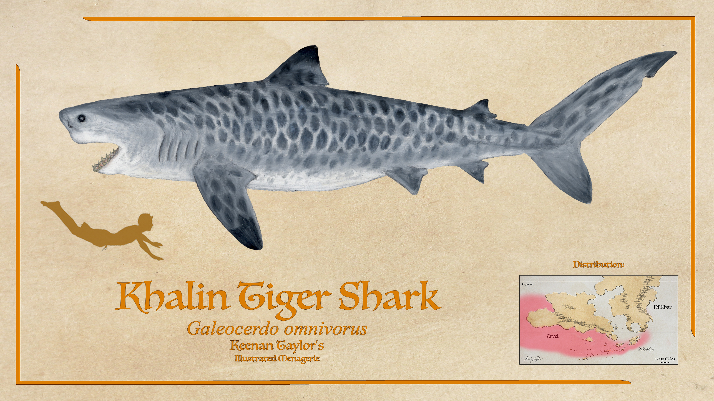
Galeocerdo omnivorous
There are two species of tiger shark in Kaimere. The greater or Khalin tiger shark is found in colder waters and is quite large, with the biggest females approaching ten meters. It is believed they have been in Kaimere since the Oligocene, with their teeth racing back well into the Tyrant Dynasty. They avoid megalodon but otherwise often enjoy a high trophic position, attacking anything that seems injured and thriving in their versatility.
Read species article →Reaper Shark
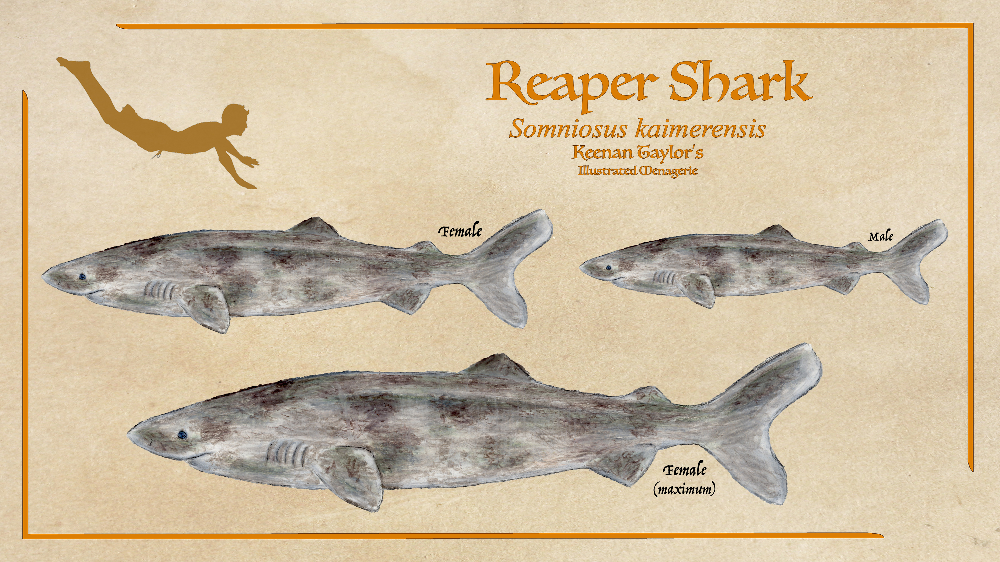
Somniosus kaimerensis
The Khalin sea is also home to the Kaimeran reaper shark: there are numerous sleeper shark species, though this is by far the largest, with big females sometimes exceeding seven meters and reports of much larger specimens reported by the Akanuk whalers who hunt in the open ocean. Like the related Greenland shark, the reaper shark lives for many centuries. Little is known of this cryptic species and their fossil record is practically nonexistent due to living in deep oceans, but genetic studies suggest they may have some Pacific and some Greenland sleeper in them, though are primarily a distinct species.
Read species article →Cobra Dogfish
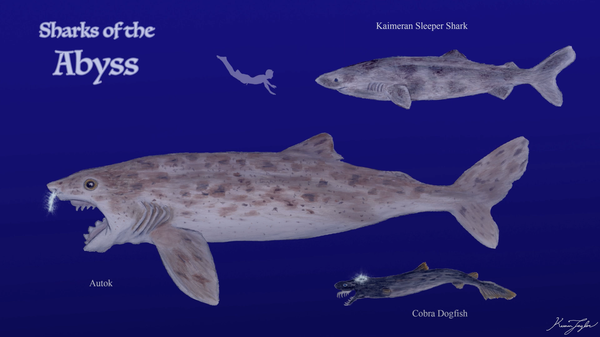
Trigonognathus ophiacanthias
Deep in the Khalin canyons and the abyss beyond, the reaper shark is one of the few species we might be familiar with. Much of the deep oceans are populated by a cast of unfamiliar creatures. The portal does not have any deep water in its territory, so any harvested abyssal fauna are basically bycatch in nearshore harvests. This has resulted in a much more unique cast of deep sea animals compared to those on Earth, with only a few familiar species. Some, like the reaper or sleeper shark, would be familiar to us. Others, like the cobra dogfish, are related to Earth species, but much larger. Unlike typical dogfish, the cobra dogfish possesses an elongated neck-like anterior body, giving rise to its common name. The first dorsal fin originates unusually far behind the head, visually separating the skull from the remainder of the body. The skull itself is remarkably flattened with extremely kinetic jaws. Numerous long recurved teeth project outward even when the mouth is closed, preventing slippery prey such as deep-sea fishes and squid from escaping.
Read species article →Haraod

Scientific placement to be confirmed
A reclusive highland predator associated with the Arvelith Highlands.
Read species article →04 · CLASSIFICATION
Taxonomic Notes
Selachii is the collective group of cartilaginous fishes distinguished from their close relatives by the characteristic shark body plan and the evolutionary adaptations associated with active predation, scavenging, filter feeding, and a remarkable diversity of aquatic habitats. On Kaimere, the term encompasses both ancient endemic shark lineages and numerous lineages introduced through successive Portal harvests.
The precise evolutionary relationships among several Kaimerean shark groups remain uncertain. This is particularly true of the ancient endemic radiations. The frogmouth sharks, for example, are unquestionably true sharks, but their exact relationship to modern shark clades remains debated. They have been tentatively placed near the base of the squalean radiation. Likewise, the allolamiaforms, represented in the Known World by the sparrow sharks, are generally regarded as either stem members or close relatives of the galean sharks. Their precise position remains unresolved.
Several animals commonly called sharks are not technically members of Selachii. The most important example is the hybodonts, which are close relatives of sharks but fall outside the strict phylogenetic definition of the group. The Assembly nevertheless generally includes them under the informal designation of "shark," as do most Kaimeran languages. The sawback shark presents a similar historical problem: Styracodemus is actually an acanthodian belonging to the endemic Styracodemiformes, rather than a true shark.
Other superficially shark-like animals have also historically been misclassified. Carpenter sharks, for example, were long considered true sharks before being recognized as distant relatives of sawfish and therefore members of the batoid radiation. Their similarity to sharks is a product of convergent evolution rather than close ancestry. Consequently, "shark" on Kaimere can refer either to the strict evolutionary group of true sharks or, in common usage, to a much broader collection of shark-shaped cartilaginous fishes. The distinction is important when reconstructing the evolutionary history of Kaimere's marine ecosystems.